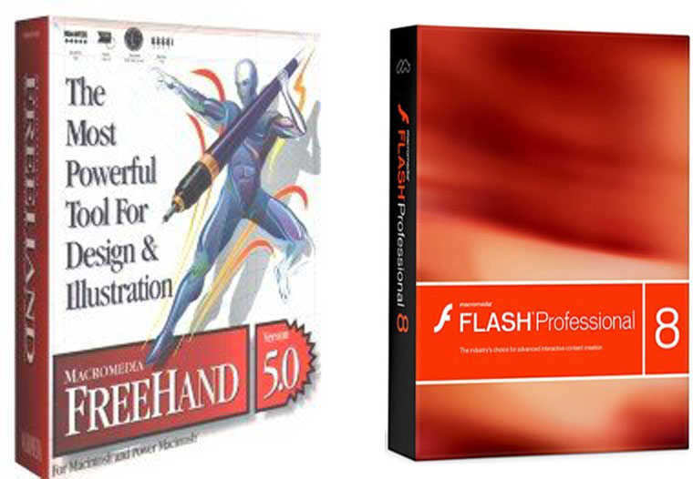
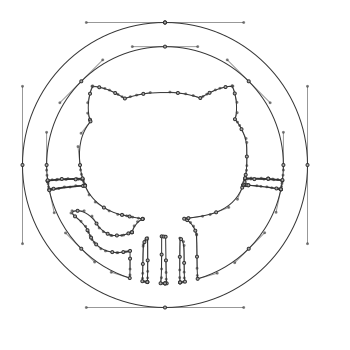
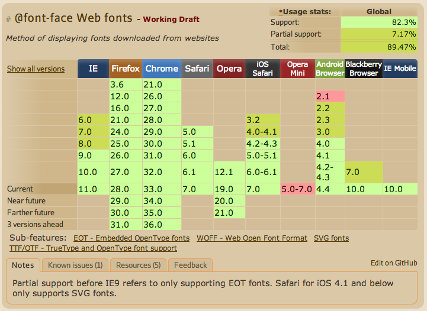
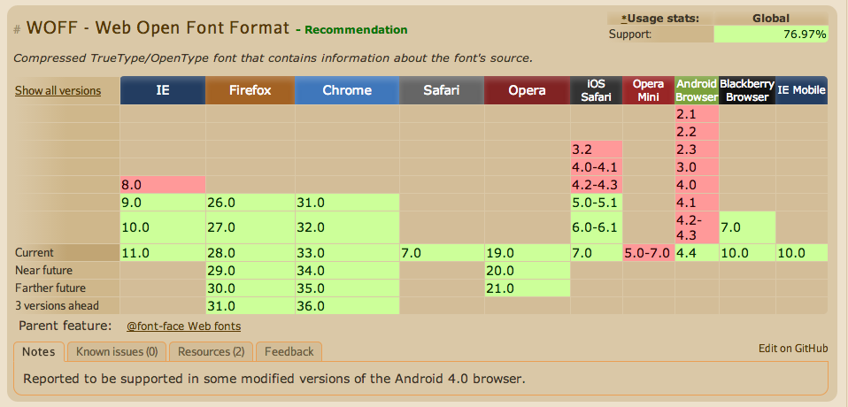
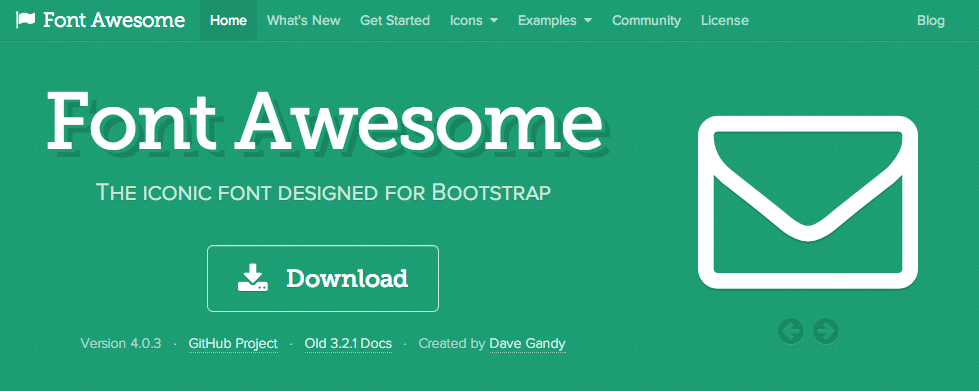
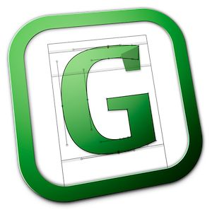
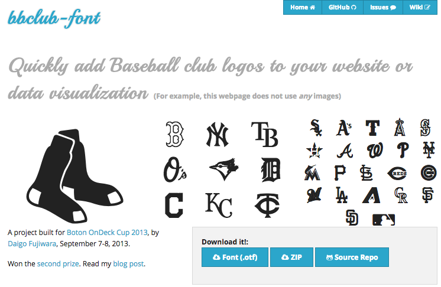
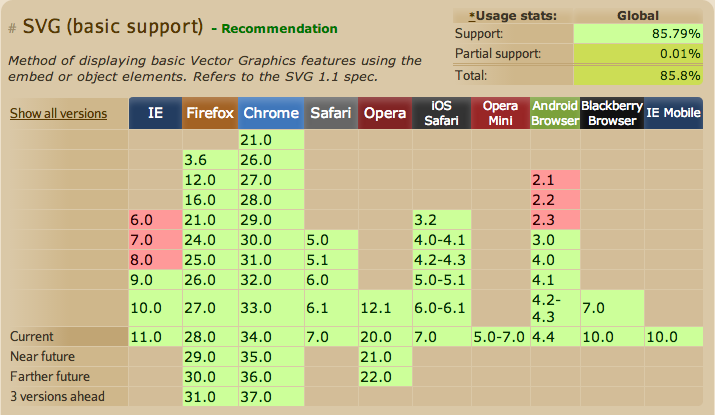
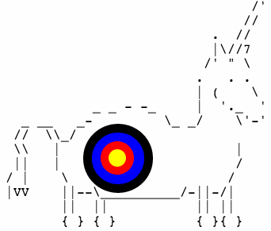

Embedded web fonts, Icon fonts and SVG: Vector-based Responsive Web Design using CSS
CASCADE BOS Tuesday, April 22, 2014
By Daigo Fujiwara daigofuji
Use the arrow keys to navigate.
Welcome
Thanks! Kianosh, NGP VAN, Cascaders!
Little about me
- Daigo Fujiwara
- Print designer since 1996.
- Web designer since 2001.
- Morphing into web developer ever since.
- Developer for Harvard Business Review
Experience with vectors
Remember Macromedia Freehand and Macromedia Flash? I do.
First off:
We Responsive Web Design
Many devices, one website.
But,
user-scalable=no or maximum-scale=1
do you use them anymore?
(You probably let them zoom.)
Problem
1. A Pixel is Not A Pixel:
Why does the 640px × 960px iPhone 4 claim to be 320px × 480px in the browser? The truth is that there are two different definitions of pixels: they can be the smallest unit a screen can support (a hardware pixel) or a pixel can be based on an optically consistent unit called a “reference pixel.”— A Pixel Identity Crisis by Scott Kellum, January 17, 2012 on A List Apart
Illustration of “reference pixel”
or what I like to call “CSS pixel”
2. Increasingly more different pixel-density display devices
I am not talking about just Apple “Retina” display
Examples include Google Chromebook Pixel
(and that was already over a year ago!):
- Samsung GalaxyS5 432 PPI
- Sony Xperia Z 441 PPI
- HTC One 468 PPI
(Those devices report as CSS Pixel Ratio of 3)
3. Remember @2x images?

Don’t get me started…
Apple's Developer GuideSolutions
(Well, some of many solutions)
Vector to the rescue
(SVG from RaphaelJS icons)
Vector
Vector graphics is the use of geometrical primitives such as points, lines, curves, and shapes or polygons—all of which are based on mathematical expressions—to represent images in computer graphics.
From Wikipedia
Method 1
web fonts
-
Pros:
- Pretty!
- Easy!
- Widely Supported!
-
Cons:
- File size/Performance
- License issues?
What is the browser support?
TL;DR: Pretty good.
Caveat
Support for Web Open Font Format (WOFF)
We do have to include multiple font formats, specifically
- EOT for IE 8,
- TTF for Chrome < 5, Firefox < 3.5, Opera < 10, Safari < 5 and
- SVG fonts for < iOS 5
@font-face syntax
@font-face {
font-family: 'MyWebFont';
src: url('webfont.eot'); /* IE9 Compat Modes */
src: url('webfont.eot?#iefix') format('embedded-opentype'), /* IE6-IE8 */
url('webfont.woff') format('woff'), /* Modern Browsers */
url('webfont.ttf') format('truetype'), /* Safari, Android, iOS */
url('webfont.svg#svgFontName') format('svg'); /* Legacy iOS */
}
— From Chris Coyer of css-tricks
Only supporting modern browsers?
@font-face {
font-family: 'MyWebFont';
src: url('webfont.woff') format('woff');
}Nice.
Web-based services for converting to web font formats:
Upload .otf or .ttf, get different formats. (Please make sure you have an appropriate license!)
Way to define font weight and font style in one font
@font-face {
font-family: 'myfont';
src: url('myfont-Regular-webfont.woff') format('woff');
font-weight: normal; font-style: normal;
}
@font-face {
font-family: 'myfont';
src: url('myfont-Italic-webfont.woff') format('woff');
font-weight: normal; font-style: italic;
}
@font-face {
font-family: 'myfont';
src: url('myfont-Bold-webfont.woff') format('woff');
font-weight: bold; font-style: normal;
}
@font-face {
font-family: 'myfont';
src: url('myfont-BoldItalic-webfont.woff') format('woff');
font-weight: bold; font-style: italic;
}Some font services and hosts
and a lot more...
Method 2
font icons
Image from github’s Octicons
-
Pros:
- Just fonts (The same @font-face)
- Use it at any size
- Use CSS effects
-
Cons:
- Monochrome (Can’t use more than one color)
- Performance?
- Cross-Origin issue
Meet Font Awesome
It is pretty darn Awesome.
- MIT like license, OK for commercial use (Open Font License)
- Flexible setup using SASS/LESS -- and everything is in variables
- Sizes, lists, stackable
- Use any css effects on them
Demo
Those are all in the docs
Other awesome icon fonts resources
- CSS-Tricks' Chris Coyer’s big list
- We love icon fonts
- icoMoon (more on this later)
Roll your own icon fonts
Glyphs
Can edit .otf format fonts
Work flow:
- Design icon in photoshop or illustrator
- Position it in 2048x2048 document in illustrator
- Paste it into Glyphs
- Export as .otf
- use service like font squirrel to generate WOFF, EOT, TTF and SVG
Great post by github engineering team on how they created Octicon.
Proof of concept
I created a font called BB Club Font for a hackathon
Alternatively
Use apps like Fontello
or
Doc on how to import
SASS Mixin by Dale Sande
An excellent write up by Dale Sande, on how to organize and manage custom icon fonts. https://gist.github.com/blackfalcon/4731881
He has written Sass icon fonts mixin, which is available via bower.
Link to his SassMeister Demo
Method 3
SVG
Scalable Vector Graphics
XML-based vector image format -- open standards, spec’ed by W3C (This above is an inline svg).
-
Pros:
- Open Standards
- Multi-Colors
- No Cross Origin issues
-
Cons:
- File size/Performance
- No IE8 (but otherwise very well supported.)
Support
For IE8, use polyfills like SVGWeb, or try simple fallbacks, or better yet, if (!Modernizr.svg)
Awesome Resources
SVG Sprite
Chris Coyer from css-tricks has written an awesome article on how to do this.
Basically, load the combined svg (he used grunt to combine multiple files into one) up front, then use
<svg viewBox="0 0 100 100" class="iconclass"><use xlink:href="#id"></use></svg> anywhere in the code. You can use class to change svg properties like fills, strokes etc.
New CSS-Tricks.com use this for its tab.
SVG with fluid layout
SVG can be contained within a containing box like this, much like video elements, to keep proportions. You can also put media query right inside the SVG..
SVG at a data URI for background images.
Using aforementioned RaphaelJS icons, you can embed any icons like this:
url("data:image/svg+xml,<svg viewBox='0 0 40 40' height='25' width='25' xmlns='http://www.w3.org/2000/svg'><path fill='rgb(91, 183, 91)' d='M2.379, 14.729L5.208,11.899L12.958,19.648L25.877,6.733L28.707,9.561L12.958,25.308Z' /></svg>")
Seen Grumpicon?
Convert any vector into web ready css/svg.
Late addition!
As I was giving the talk, Kianosh pointed out that Chris Coyer of CSS-Tricks have *just* published a blog post titled: Inline SVG vs Icon Fonts [CAGEMATCH]. His conclusion:
If you can go IE 9+ / Android 3+, inline SVG is better at pretty much everything than icon fonts. If you need the deeper browser support, I feel like an inline SVG fallback would be too big of a pain to be worth it.
Definitely worth a read if you are interested in this topic.
Questions?
Thoughts?
Open Discussion.
Thanks!
daigo@daigofujiwara.com